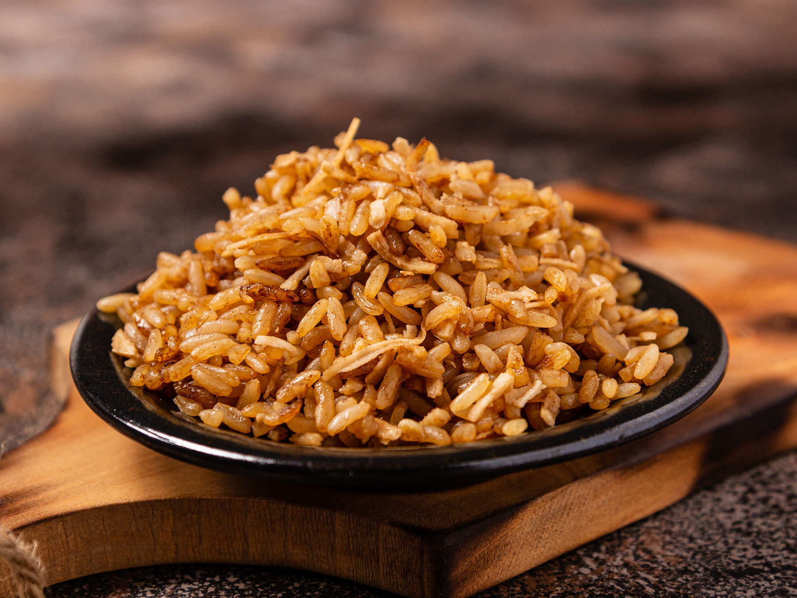

Arroz con coco y camarón fresco (Región Caribe)
El arroz con camarones es típico de la Costa Caribe y Costa Pacífica...
Ingredientes
- 1 coco grande, partido en trozos pequeños
Preparación
- Licua el coco con su agua...
El arroz con camarones es típico de la Costa Caribe y Costa Pacífica...